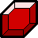
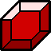
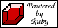
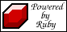

Icons for Ruby
Ruby is yet to have an agreed-upon mascot, however it does
have many images of rubies floating about its various web
sites. Most of these are realistic looking rubies, however
I thought a more anime style would suit Ruby better
because it's more idealised, simple and fun and hence a
better icon.
These icons were inspired by two things: the currency in
Zelda computer games by Nintendo of Japan (the rupee:  ) and the game called
Bejeweled (particularly the PopCap
Games version). The rupees in Zelda and the rubies in
Bejeweled glint and glimmer and I would have liked to add
a similar gem-like wavery glint to these (in an anime
style) but my drawing skills didn't seem to permit it.
Perhaps it requires animation but perhaps not. Some Ruby
fan come artist out there can probably improve on the
idea.
) and the game called
Bejeweled (particularly the PopCap
Games version). The rupees in Zelda and the rubies in
Bejeweled glint and glimmer and I would have liked to add
a similar gem-like wavery glint to these (in an anime
style) but my drawing skills didn't seem to permit it.
Perhaps it requires animation but perhaps not. Some Ruby
fan come artist out there can probably improve on the
idea.
These were drawn in XFig (ruby.fig.gz) and then rasterized
and cleaned up in the GIMP. The colours are from XFig's
predefined range of reds and I know they're not terribly
true-to-life colours - I wasn't aiming for realism here.
Version A
 |
|
 |
 |
 |
| 16x16 | 32x32 | 48x48 | 64x64 | Powered by Ruby |
Version B
 |
|
|
|
 |
| 16x16 | 32x32 | 48x48 | 64x64 | Powered by Ruby |